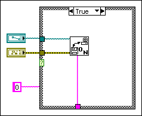
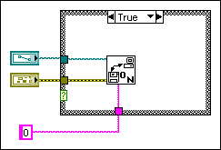

Improve the appearance of the block diagram by wiring efficiently. Poor wire organization might not produce errors, but it can make the block diagram difficult to read and debug or make the VI appear to do things it does not do.
| Note If you are unsure of what connects to a wire, double-click to select a branch or triple-click to select the entire wire. |
Avoid placing objects on top of wires. Placing a terminal or icon on top of a wire makes it appear as if a connection exists when it does not. Dragging a wire through an icon or terminal also appears to make a connection, but the wire is actually behind the icon.
Avoid wiring under a structure border or between overlapped objects because LabVIEW might hide some segments of the resulting wire. You inadvertently can create hidden wire segments by moving a tunnel or by enlarging a structure, as shown in the following illustration.

You can drag the wire segment connected to the constant, move the constant, or resize the structure so the hidden wire segments reappear, as shown in the following illustration. You also can right-click the wire and select Clean Up Wire from the shortcut menu to show hidden segments of the wire. To automatically reroute all existing wires and rearrange objects on the block diagram, select Edit»Clean Up Diagram. You also can clean up the block diagram by clicking the Clean Up Diagram button  on the block diagram toolbar or pressing the <Ctrl–U> keys. (macOS) Press the <Command–U> keys. (Linux) Press the <Alt–U> keys.
on the block diagram toolbar or pressing the <Ctrl–U> keys. (macOS) Press the <Command–U> keys. (Linux) Press the <Alt–U> keys.
